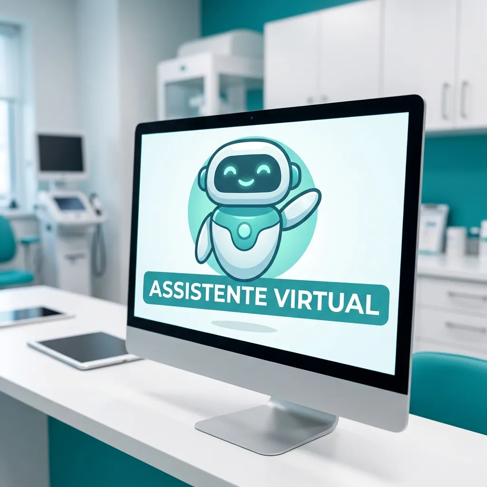

Secretária virtual para consultório médico: vale a pena?
No dinâmico universo da saúde, onde a excelência clínica é inegociável, a eficiência administrativa tornou-se um pilar fundamental. Médicos, dentistas, psicólogos e gestores de clínicas enfrentam diariamente o desafio de equilibrar o atendimento humanizado com a demanda operacional crescente.
É nesse cenário que a figura da secretária virtual, especialmente aquelas impulsionadas por Inteligência Artificial e integradas ao WhatsApp, surge como uma solução inovadora. Mas será que vale a pena investir nessa tecnologia para o seu consultório?
O Desafio da Gestão em Consultórios Brasileiros
A rotina de um consultório médico no Brasil é repleta de particularidades. Desde o agendamento de consultas até o gerenciamento de prontuários, passando pela comunicação com pacientes e a gestão financeira, o volume de tarefas administrativas pode sobrecarregar a equipe e impactar a qualidade do atendimento.
Um dos maiores problemas é o absenteísmo. Pacientes que faltam às consultas geram perda de receita e tempo. A comunicação eficaz e lembretes proativos são cruciais.
Impacto do Absenteísmo: Estudos indicam que a taxa de absenteísmo (faltas) em consultórios médicos no Brasil pode chegar a 25%, resultando em significativo prejuízo financeiro e de otimização da agenda.
O Que É uma Secretária Virtual para Consultório?
Diferente de uma secretária remota humana, uma secretária virtual para consultório, como a Aplia Saúde, é uma plataforma inteligente que automatiza tarefas administrativas usando IA, geralmente via WhatsApp. Ela funciona como um membro da equipe 24 horas por dia, 7 dias por semana, sem férias ou feriados.
Sua principal função é otimizar a comunicação, o agendamento e o relacionamento com o paciente, liberando a equipe humana para focar no que realmente importa: o cuidado direto com a saúde.
Vantagens da Secretária Virtual para a Saúde
Otimização do Tempo e Redução de Custos
- Redução de Custos Operacionais: Uma secretária virtual não demanda encargos trabalhistas, benefícios ou espaço físico, representando uma economia substancial em comparação com uma secretária tradicional.
- Agendamento Inteligente: Automatiza todo o processo de agendamento, reagendamento e cancelamento de consultas, integrando-se à sua agenda e minimizando erros humanos.
- Lembretes Automáticos: Envia lembretes de consultas via WhatsApp, reduzindo significativamente as taxas de absenteísmo e otimizando a ocupação da sua agenda.
- Filtro de Perguntas Frequentes: Responde automaticamente a dúvidas comuns dos pacientes sobre endereço, convênios aceitos, horários de funcionamento, entre outros.
Atendimento 24/7 e Melhor Experiência do Paciente
- Disponibilidade Contínua: Pacientes podem agendar consultas ou tirar dúvidas a qualquer hora, aumentando a conveniência e a satisfação.
- Comunicação Ágil: Utiliza o WhatsApp, o canal de comunicação preferido por 98% dos brasileiros, garantindo que a informação chegue de forma rápida e eficiente.
- Personalização na Escala: A IA da Aplia Saúde pode personalizar as interações com base no histórico do paciente, oferecendo uma experiência mais acolhedora e eficiente.
- Pós-Consulta Otimizado: Pode automatizar o envio de instruções pós-consulta, pesquisas de satisfação ou lembretes para retornos, fortalecendo o relacionamento.
Conformidade e Segurança (LGPD e CFM)
- Segurança de Dados: Desenvolvida para operar em conformidade com a Lei Geral de Proteção de Dados (LGPD), garantindo a segurança e a privacidade das informações dos pacientes.
- Boas Práticas Médicas: Auxilia na organização e no registro de interações, contribuindo para a manutenção de um padrão ético e profissional, em antecipação e conformidade com diretrizes futuras, como a proposta de Resolução CFM 2454/2026, que busca aprimorar a relação médico-paciente e a eficiência administrativa.
Conformidade Regulatória: A Aplia Saúde é projetada para apoiar clínicas na adesão à LGPD e às diretrizes éticas do Conselho Federal de Medicina (CFM), garantindo a proteção de dados e a qualidade do atendimento.
Como uma Secretária Virtual da Aplia Saúde Funciona na Prática
Imagine o dia a dia do seu consultório transformado. Veja como a Aplia Saúde pode revolucionar sua gestão:
1 Atendimento Inicial Automatizado
O paciente entra em contato via WhatsApp e é imediatamente atendido pela IA da Aplia Saúde. Ela identifica a necessidade (agendamento, dúvida, informação) e direciona a conversa.
2 Agendamento Inteligente e Personalizado
A secretária virtual verifica a disponibilidade da agenda do profissional, oferece horários compatíveis e confirma a consulta, enviando todas as informações necessárias, incluindo a possibilidade de adicionar ao calendário.
3 Redução de Faltas com Lembretes Proativos
Dias antes da consulta, o sistema envia lembretes estratégicos por WhatsApp, permitindo que o paciente confirme, reagende ou cancele facilmente, liberando o horário para outro atendimento.
4 Suporte Contínuo e Pós-Atendimento
Após a consulta, a Aplia Saúde pode enviar pesquisas de satisfação, instruções de cuidados, informações sobre retorno ou até mesmo saudar o paciente em datas especiais, fortalecendo o vínculo.
Quando a Secretária Virtual Vale a Pena?
A decisão de adotar uma secretária virtual depende das necessidades e do estágio do seu consultório. Ela é particularmente vantajosa para:
- Profissionais Autônomos: Que precisam de apoio administrativo, mas não querem arcar com os custos de uma secretária em tempo integral.
- Clínicas com Alto Volume de Atendimento: Para desafogar a recepção, reduzir filas de espera no telefone e otimizar o fluxo de pacientes.
- Consultórios com Horários Estendidos ou Noturnos: Oferecendo atendimento ao paciente fora do horário comercial, sem custo adicional.
- Inovadores e Tecnológicos: Profissionais que buscam modernizar a gestão e oferecer uma experiência diferenciada ao paciente.
- Quem Busca Redução de Absenteísmo: Se a sua clínica sofre com muitas faltas, a secretária virtual é uma ferramenta poderosa para minimizar esse problema.
Decisão Estratégica: Uma secretária virtual vale a pena quando o objetivo é otimizar recursos, aprimorar a experiência do paciente e garantir conformidade, permitindo que você e sua equipe foquem no cuidado essencial.
Conclusão: Um Investimento no Futuro da Sua Clínica
A secretária virtual para consultório médico não é apenas uma ferramenta tecnológica; é um investimento estratégico no futuro da sua clínica. Ela representa mais tempo para você focar em seus pacientes, menos preocupações administrativas e uma gestão mais eficiente e moderna.
Para médicos, dentistas, psicólogos e gestores de clínicas no Brasil, a Aplia Saúde oferece a oportunidade de elevar o padrão de atendimento, otimizar custos e garantir que sua prática esteja alinhada com as expectativas dos pacientes e as demandas do mercado atual. É um passo decisivo rumo à excelência.
Referências e Fontes
- Conselho Federal de Medicina (CFM): Resolução CFM nº 2.314/2022 (Dispõe sobre a Telemedicina no Brasil) e diretrizes éticas gerais para a prática médica.
- Pesquisa Panorama Mobile Time/Opinion Box: Uso de aplicativos no Brasil (dados sobre o WhatsApp).
- Lei Geral de Proteção de Dados Pessoais (LGPD): Lei nº 13.709/2018.
Quer parar de perder pacientes?
A Aplia é uma assistente de IA que atende seus pacientes 24/7 pelo WhatsApp, agenda consultas automaticamente e envia lembretes.
Conhecer a Aplia